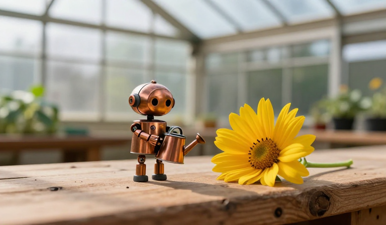

Based on the documented Cinema Studio feature set. Historical versions and unverified concepts are labeled.

Visual preview / selected take
Every feature below has a wireframe/mockup state. “Documented” is a source description, not a claim that our local app implements it.